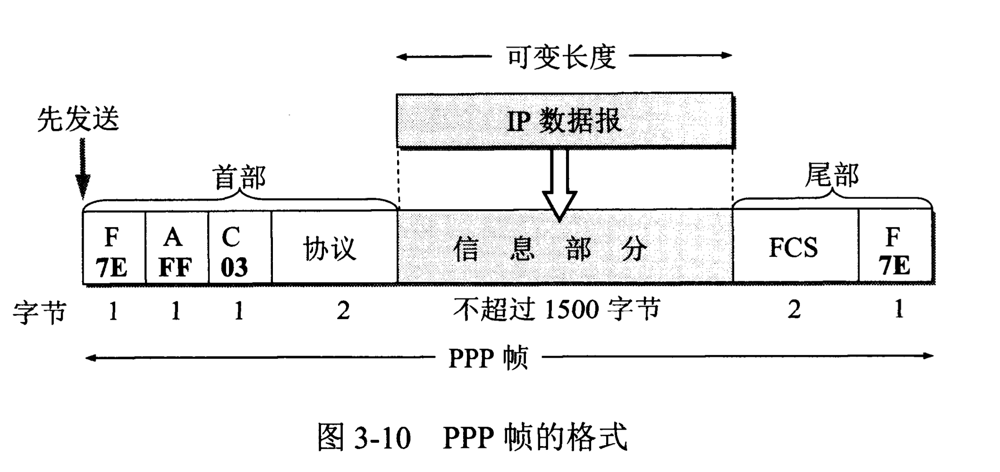
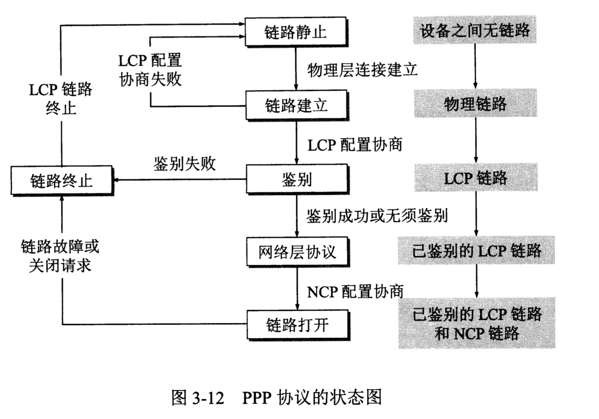

计算机网络/数据链路层/点对点协议PPP # PPP协议的特点 1. 简单。IETF在设计互联网体系结构时把其中最复杂的部分放在TCP协议中，而网际协议IP则相对比较简单，它提供的是不可靠的数据服务。在这种情况下，数据链路层没有必要提供比IP协议更多的功能。因此，对数据链路层的帧，不需要纠错，不需要序号，也不需要流量控制。 2. 封装成帧。PPP协议必须规定特殊的字符作为帧定界符。 3. 透明性。PPP协议必须保证数据传输的透明性。 4. 多种网络层协议。PPP协议必须能够在同一条物理链路上同时支持多种网络层协议的运行。 5. 多种类型链路。PPP协议必须能够在多种类型的链路上运行。 6. 差错检测(error detection)。PPP协议必须能够对接收端收到的帧进行检测，并立即丢弃有差错的帧。 7. 检测连接状态。PPP协议必须具有一种机制能够及时（不超过几分钟）自动检测出链路是否处于正常工作状态。 8. 最大传送单元。PPP协议必须对每一个种类型的点对点链路设置最大传送单元的标准默认值。 9. 网络层地址协商。PPP协议必须提供一种机制使通信的两个网络层（例如，两个IP层）的实体能够通过协商知道或能够配置彼此的网络层地址。 10. 数据压缩协商。ppp协议必须提供一种方法来协商数据压缩算法。
PPP协议有三个组成部分： 1. 一个将IP数据报封装到串行链路的方法。 2. 一个用来建立、配置和测试数据链路连接的链路控制协议LCP(Link Control Protocol)。 3. 一套网络控制协议NCP(Network Control Protocol)，其中的每一个协议支持不同的网络层协议。
PPP协议的帧格式

各字段的意义
PPP帧的首部和尾部分别为四个字段和两个字段。 1. 首部的第一个字段和尾部的第二个字段都是标志字段F(Flag)，规定为0x7E。标志字段表示一个帧的开始或结束（定界符）。 2. 首部中的地址字段A规定为0xFF，控制字段C规定为0x03。最初曾考虑以后再对这两个字段的值进行其他定义，但至今也没有给出。可见这两个字段实际上并没有携带PPP帧的信息。 3. 首部的第四个字段是2字节的协议字段。当协议字段为0x0021时，PPP帧的信息字段就是IP数据报。若为0xC021，则信息字段是PPP链路控制协议LCP的数据，而0x8021表示这是网络层的控制数据。 4. 信息字段的长度是可变的，不超过1500字节。 5. 尾部中的第一个字段（2字节）是使用CRC的帧检验序列FCS。
透明传输的实现
字节填充
当信息字段中出现和标志字段一样的比特(0x7E)组合时，就必须采取一些措施使这种形式上和标志字段一样的比特组合不出现在信息字段中。 当PPP使用异步传输时，它把转义字符定义为0x7D，并使用字节填充。 1. 把信息字段中出现的每一个0x7E字节转变成为2字节序列(0x7D,0x5E)。 2. 如信息字段中出现一个0x7D的字节（即出现了和转义字符一样的比特组合），则把0x7D转变成为2字节序列(0x7D,0x5D)。 3. 若信息字段中出现ASCII码的控制字符（即数值小于0x20的字符），则在该字符前面要加入一个0x7D字节，同时将该字符的编码加以改变。、
零比特填充
PPP协议用在SONET/SDH链路时，使用同步传输（一连串的比特连续传送）而不是异步传输（逐个字符地传送）。在这种情况下，PPP协议采用零比特填充的方法来实现透明传输。 零比特填充的具体做法是：在发送端，先扫描整个信息字段。只要发现有5个连续1，则立即填入一个0。因此经过这种零比特填充后的数据，就可以保证在信息字段中不会出现6个连续的1。
PPP协议的工作状态

当用户拨号接入ISP后，就建立了一条从用户个人电脑到ISP的物理连接。这时，用户个人电脑向ISP发送一系列的链路控制协议LCP分组（封装成多个PPP帧），以便建立LCP连接。这些分组及其响应选择了将要使用的一些PPP参数。接着还要进行网络层配置，网络控制协议NCP给新接入的用户个人电脑分配一个临时的IP地址。这样，用户个人电脑就成为互联网上的一个有IP地址的主机了。 当用户通信完毕时，NCP释放网络层连接，收回原来分配出去的IP地址。接着，LCP释放数据链路层连接。最后释放的是物理层的连接。
参考文献：《计算机网络（第7版）》谢希仁著。